2026 National 5 Chemistry - Paper 1 questions
Source: Scottish Qualifications Authority (SQA) / Qualifications Scotland. This is a StemInteract HTML companion, not an official HTML edition. Selectable text is supplied alongside original page images. Use the images or original PDF for equations, powers, fractions, vector notation, tables and diagrams; text extraction cannot fully preserve mathematical layout.
Jump to a question
PDF page 1
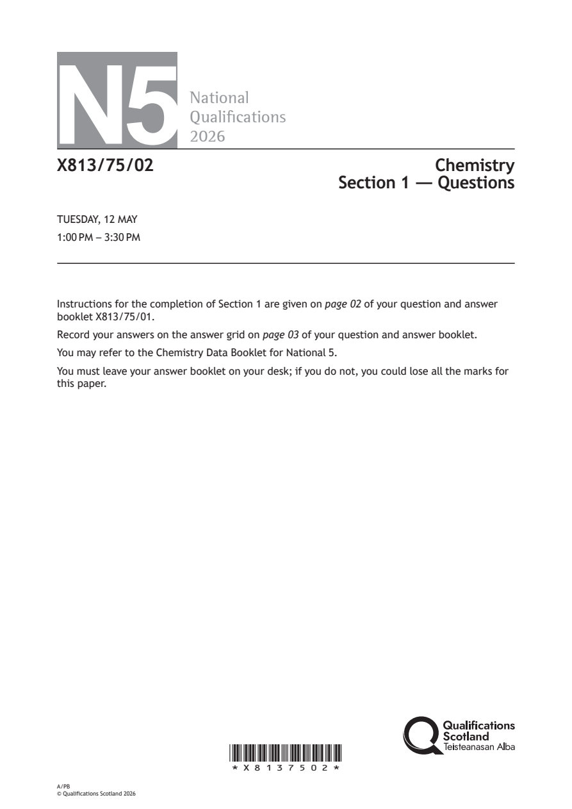
Selectable page text
N5
National
Qualications
2026
X813/75/02 Chemistry
Section 1 — Questions
TUESDAY, 12 MAY
1:00 PM – 3:30 PM
Instructions for the completion of Section 1 are given on page 02 of your question and answer
booklet X813/75/01.
Record your answers on the answer grid on page 03 of your question and answer booklet.
You may refer to the Chemistry Data Booklet for National 5.
You must leave your answer booklet on your desk; if you do not, you could lose all the marks for
this paper.
*X8137502*
A/PB
© Qualifications Scotland 2026PDF page 2
Paper 1, Question 1Paper 1, Question 2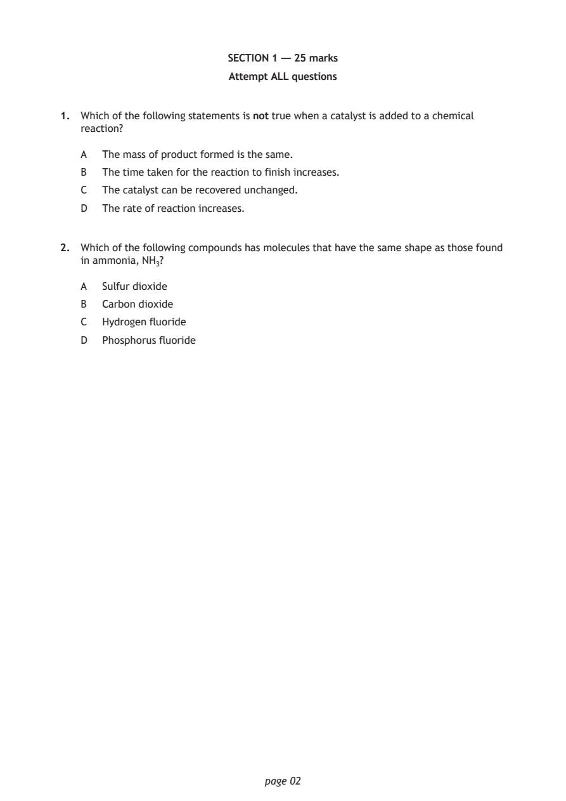
Selectable page text
SECTION 1 — 25 marks
Attempt ALL questions
1. Which of the following statements is not true when a catalyst is added to a chemical
reaction?
A The mass of product formed is the same.
B The time taken for the reaction to finish increases.
C The catalyst can be recovered unchanged.
D The rate of reaction increases.
2. Which of the following compounds has molecules that have the same shape as those found
in ammonia, NH₃?
A Sulfur dioxide
B Carbon dioxide
C Hydrogen fluoride
D Phosphorus fluoride
page 02PDF page 3
Paper 1, Question 3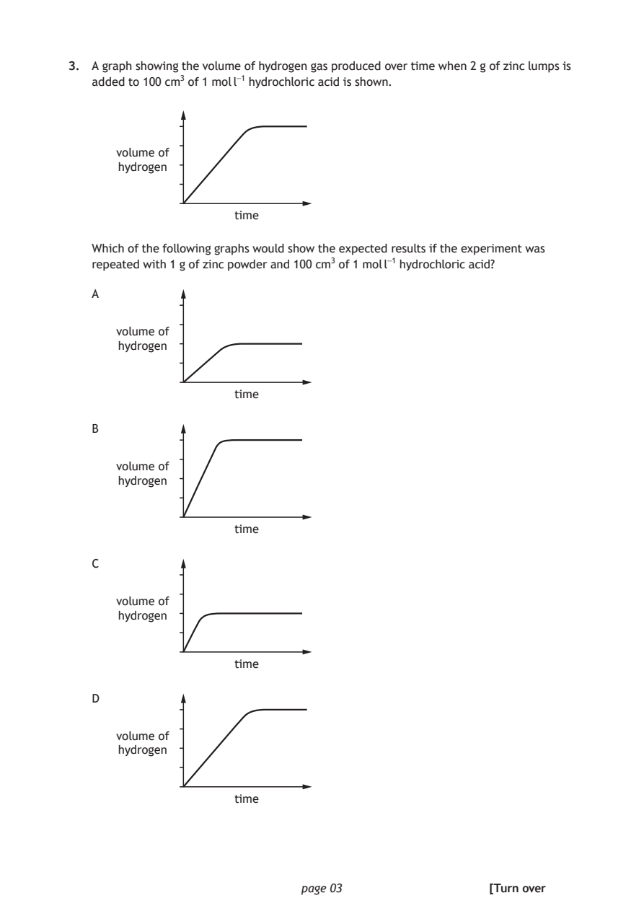
Selectable page text
3. A graph showing the volume of hydrogen gas produced over time when 2 g of zinc lumps is
added to 100 cm³ of 1 mol l⁻¹ hydrochloric acid is shown.
volume of
hydrogen
time
Which of the following graphs would show the expected results if the experiment was
repeated with 1 g of zinc powder and 100 cm³ of 1 mol l⁻¹ hydrochloric acid?
A
volume of
hydrogen
time
B
volume of
hydrogen
time
C
volume of
hydrogen
time
D
volume of
hydrogen
time
page 03 [Turn overPDF page 4
Paper 1, Question 4Paper 1, Question 5Paper 1, Question 6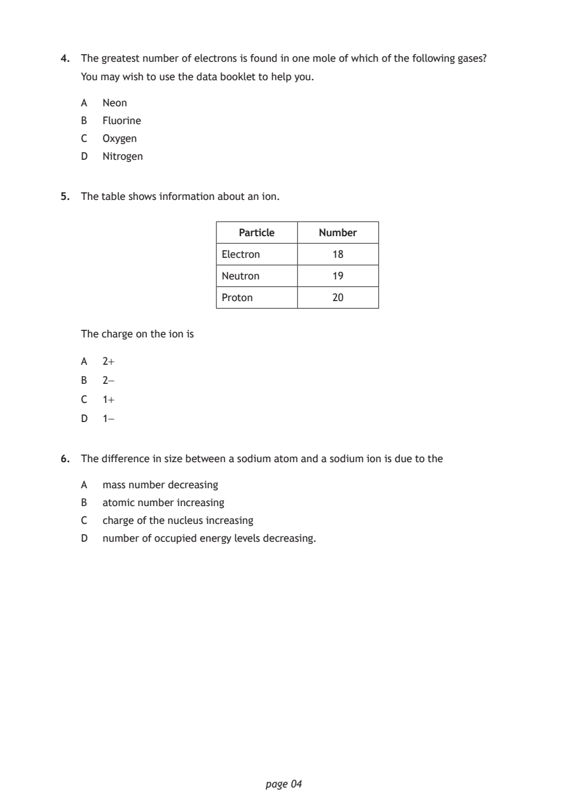
Selectable page text
4. The greatest number of electrons is found in one mole of which of the following gases?
You may wish to use the data booklet to help you.
A Neon
B Fluorine
C Oxygen
D Nitrogen
5. The table shows information about an ion.
Particle Number
Electron 18
Neutron 19
Proton 20
The charge on the ion is
A 2+
B 2−
C 1+
D 1−
6. The difference in size between a sodium atom and a sodium ion is due to the
A mass number decreasing
B atomic number increasing
C charge of the nucleus increasing
D number of occupied energy levels decreasing.
page 04PDF page 5
Paper 1, Question 7Paper 1, Question 8Paper 1, Question 9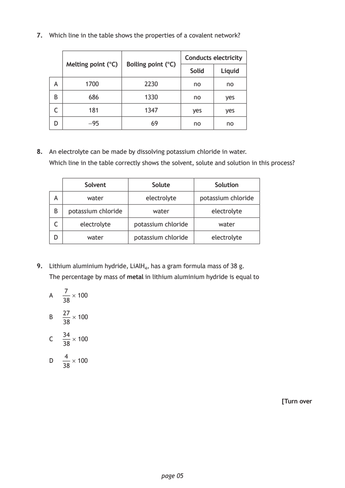
Selectable page text
7. Which line in the table shows the properties of a covalent network?
Conducts electricity
Melting point (°C) Boiling point (°C)
Solid Liquid
A 1700 2230 no no
B 686 1330 no yes
C 181 1347 yes yes
D −95 69 no no
8. An electrolyte can be made by dissolving potassium chloride in water.
Which line in the table correctly shows the solvent, solute and solution in this process?
Solvent Solute Solution
A water electrolyte potassium chloride
B potassium chloride water electrolyte
C electrolyte potassium chloride water
D water potassium chloride electrolyte
9. Lithium aluminium hydride, LiAlH₄, has a gram formula mass of 38 g.
The percentage by mass of metal in lithium aluminium hydride is equal to
7
A × 100
38
27
B × 100
38
34
C × 100
38
4
D × 100
38
[Turn over
page 05PDF page 6
Paper 1, Question 10Paper 1, Question 11Paper 1, Question 12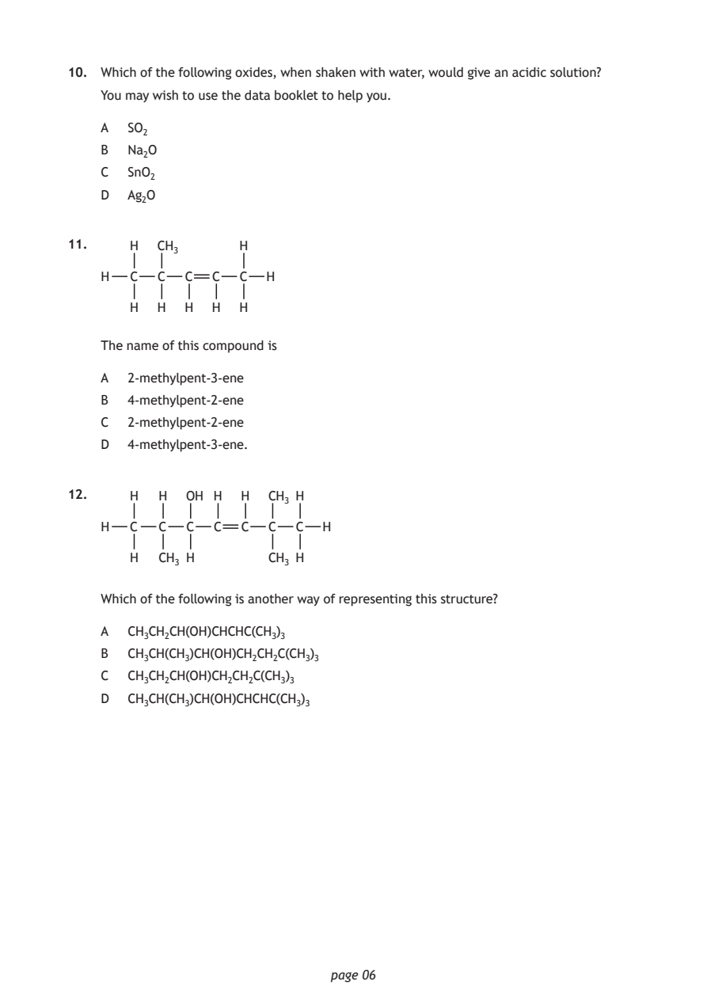
Selectable page text
10. Which of the following oxides, when shaken with water, would give an acidic solution?
You may wish to use the data booklet to help you.
A SO₂
B Na₂O
C SnO₂
D Ag₂O
11. H CH₃ H
H C C C C C H
H H H H H
The name of this compound is
A 2‑methylpent‑3‑ene
B 4‑methylpent‑2‑ene
C 2‑methylpent‑2‑ene
D 4‑methylpent‑3‑ene.
12. H H OH H H CH₃ H
H C C C C C C C H
H CH₃ H CH₃ H
Which of the following is another way of representing this structure?
A CH₃CH₂CH(OH)CHCHC(CH₃)₃
B CH₃CH(CH₃)CH(OH)CH₂CH₂C(CH₃)₃
C CH₃CH₂CH(OH)CH₂CH₂C(CH₃)₃
D CH₃CH(CH₃)CH(OH)CHCHC(CH₃)₃
page 06PDF page 7
Paper 1, Question 13Paper 1, Question 14Paper 1, Question 15Paper 1, Question 16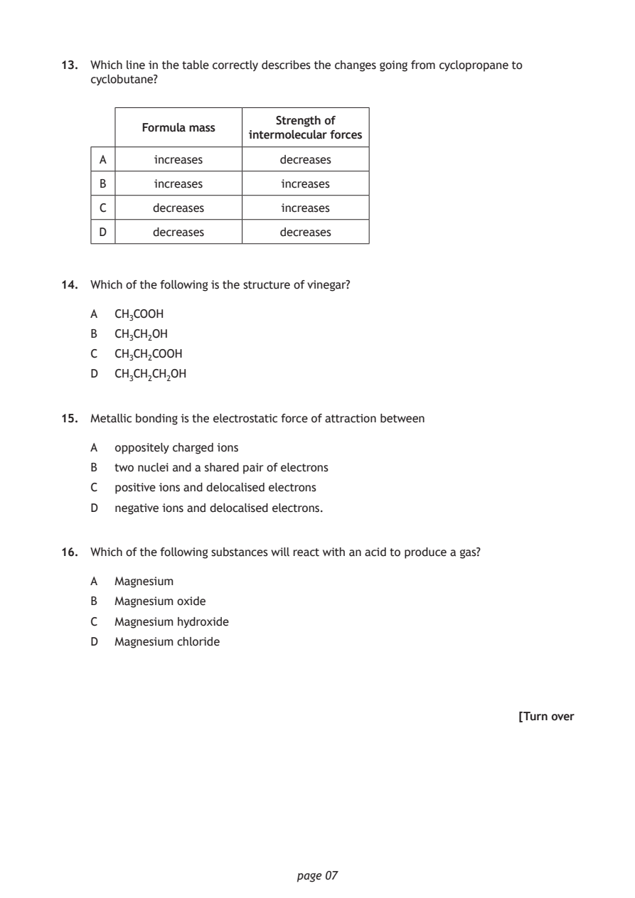
Selectable page text
13. Which line in the table correctly describes the changes going from cyclopropane to
cyclobutane?
Strength of
Formula mass
intermolecular forces
A increases decreases
B increases increases
C decreases increases
D decreases decreases
14. Which of the following is the structure of vinegar?
A CH₃COOH
B CH₃CH₂OH
C CH₃CH₂COOH
D CH₃CH₂CH₂OH
15. Metallic bonding is the electrostatic force of attraction between
A oppositely charged ions
B two nuclei and a shared pair of electrons
C positive ions and delocalised electrons
D negative ions and delocalised electrons.
16. Which of the following substances will react with an acid to produce a gas?
A Magnesium
B Magnesium oxide
C Magnesium hydroxide
D Magnesium chloride
[Turn over
page 07PDF page 8
Paper 1, Question 17Paper 1, Question 18Paper 1, Question 19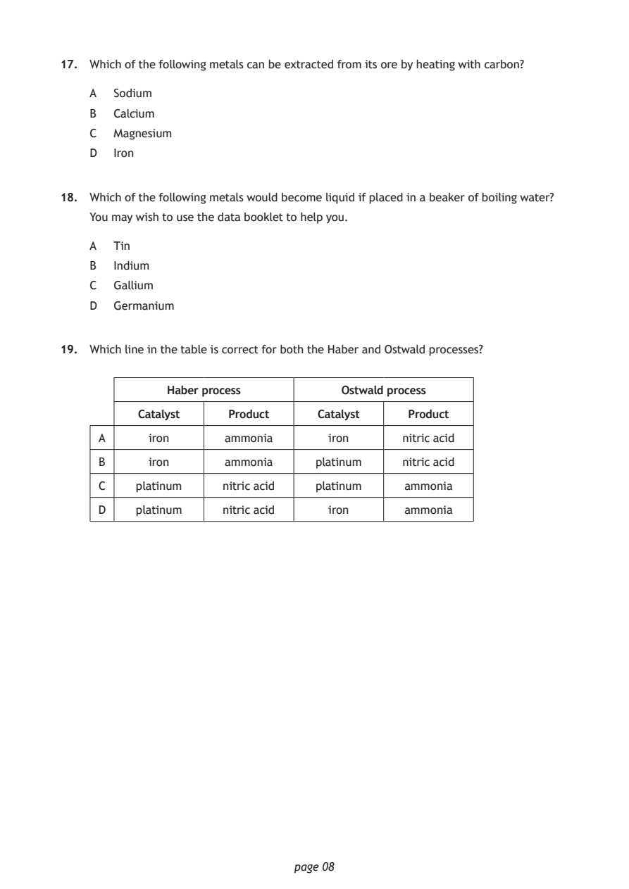
Selectable page text
17. Which of the following metals can be extracted from its ore by heating with carbon?
A Sodium
B Calcium
C Magnesium
D Iron
18. Which of the following metals would become liquid if placed in a beaker of boiling water?
You may wish to use the data booklet to help you.
A Tin
B Indium
C Gallium
D Germanium
19. Which line in the table is correct for both the Haber and Ostwald processes?
Haber process Ostwald process
Catalyst Product Catalyst Product
A iron ammonia iron nitric acid
B iron ammonia platinum nitric acid
C platinum nitric acid platinum ammonia
D platinum nitric acid iron ammonia
page 08PDF page 9
Paper 1, Question 20Paper 1, Question 21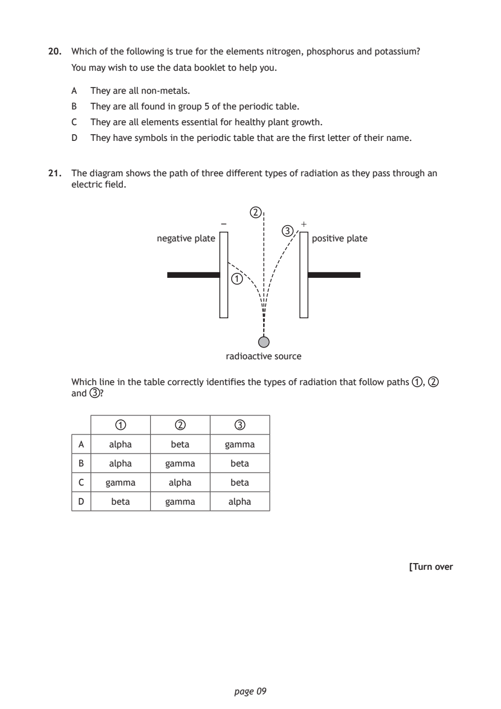
Selectable page text
20. Which of the following is true for the elements nitrogen, phosphorus and potassium?
You may wish to use the data booklet to help you.
A They are all non‑metals.
B They are all found in group 5 of the periodic table.
C They are all elements essential for healthy plant growth.
D They have symbols in the periodic table that are the first letter of their name.
21. The diagram shows the path of three different types of radiation as they pass through an
electric field.
2
– +
3
negative plate positive plate
1
radioactive source
Which line in the table correctly identifies the types of radiation that follow paths 1 , 2
and 3 ?
1 2 3
A alpha beta gamma
B alpha gamma beta
C gamma alpha beta
D beta gamma alpha
[Turn over
page 09PDF page 10
Paper 1, Question 22Paper 1, Question 23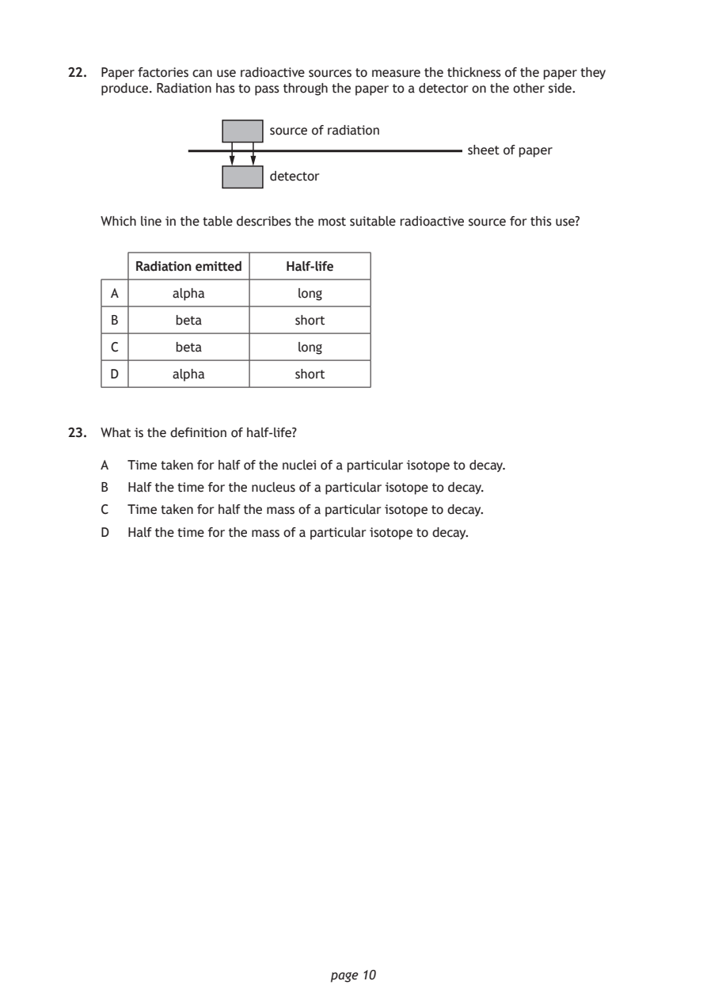
Selectable page text
22. Paper factories can use radioactive sources to measure the thickness of the paper they
produce. Radiation has to pass through the paper to a detector on the other side.
source of radiation
sheet of paper
detector
Which line in the table describes the most suitable radioactive source for this use?
Radiation emitted Half‑life
A alpha long
B beta short
C beta long
D alpha short
23. What is the definition of half‑life?
A Time taken for half of the nuclei of a particular isotope to decay.
B Half the time for the nucleus of a particular isotope to decay.
C Time taken for half the mass of a particular isotope to decay.
D Half the time for the mass of a particular isotope to decay.
page 10PDF page 11
Paper 1, Question 24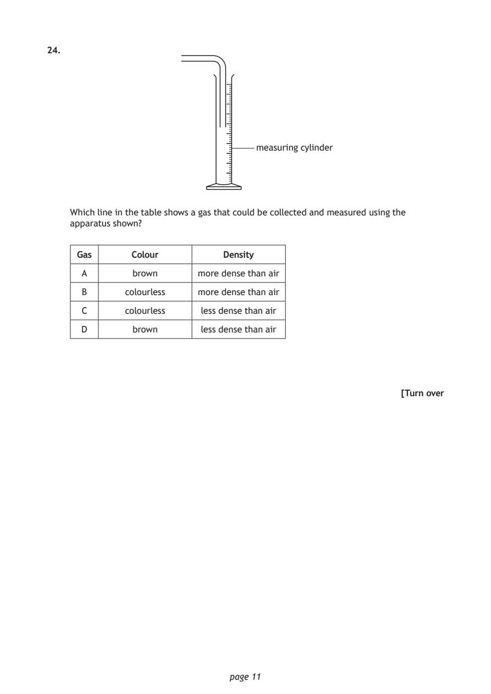
Selectable page text
24.
measuring cylinder
Which line in the table shows a gas that could be collected and measured using the
apparatus shown?
Gas Colour Density
A brown more dense than air
B colourless more dense than air
C colourless less dense than air
D brown less dense than air
[Turn over
page 11PDF page 12
Paper 1, Question 25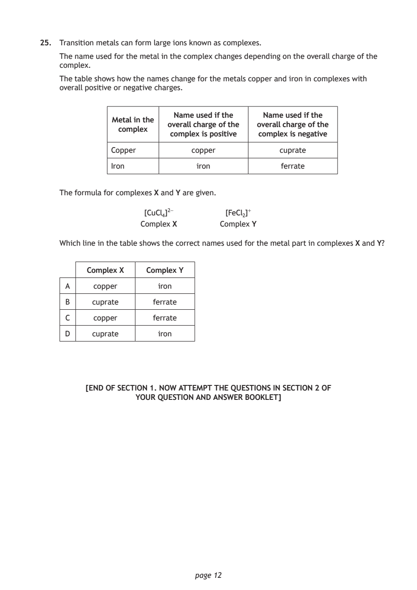
Selectable page text
25. Transition metals can form large ions known as complexes.
The name used for the metal in the complex changes depending on the overall charge of the
complex.
The table shows how the names change for the metals copper and iron in complexes with
overall positive or negative charges.
Name used if the Name used if the
Metal in the
overall charge of the overall charge of the
complex
complex is positive complex is negative
Copper copper cuprate
Iron iron ferrate
The formula for complexes X and Y are given.
[CuCl₄]²⁻ [FeCl₂]⁺
Complex X Complex Y
Which line in the table shows the correct names used for the metal part in complexes X and Y?
Complex X Complex Y
A copper iron
B cuprate ferrate
C copper ferrate
D cuprate iron
[END OF SECTION 1. NOW ATTEMPT THE QUESTIONS IN SECTION 2 OF
YOUR QUESTION AND ANSWER BOOKLET]
page 12